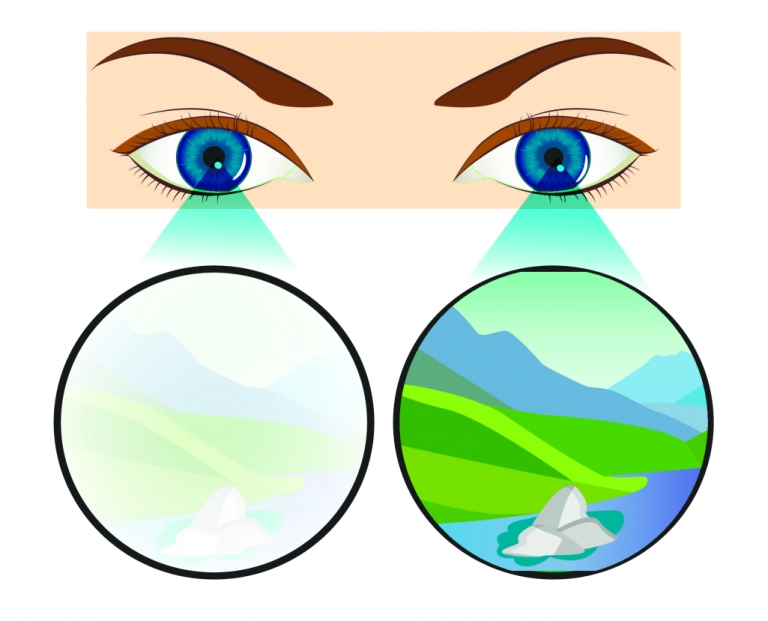
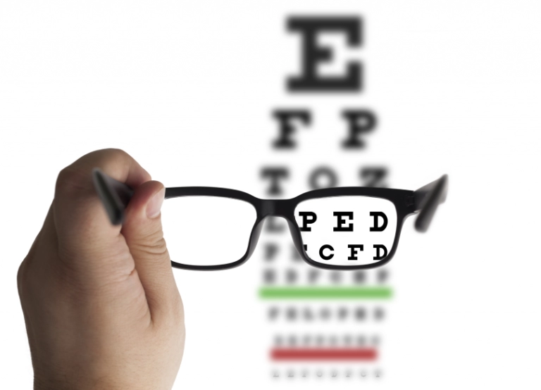
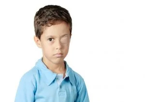

Patching For Lazy Eye Treatment can now be avoided. About 4% of children & between 1-5% of the adult population is affected by this visual impairment
Amblyopia, commonly known as ‘Lazy eye’, is a vision-related disorder that affects young children. And you can get your lazy eye treatment using our Amblyopia therapy software!

In some children, only one of the two eyes focuses properly. This is a vision problem called lazy eyes (the medical term for this is Amblyopia). It is caused when the two eyes send different images to the brain. For example, it may happen if one of the eyes is more nearsighted, farsighted, or has more astigmatism (refractive error) than the other, or if the child has a squint. The brain then primarily processes the information coming from the better eye, ignoring the other. If you continue without an amblyopia treatment for too long, it can continue to affect in later years. It is estimated that about 4% of children and between 1-5% of the adult population is affected by this visual impairment. (source)

Vision develops in the first few years of life as the brain starts interpreting visual signals coming from the eyes. What we ‘see’ results from signals sent from the eyes to the brain. Usually, the brain receives signals from both (bi) eyes (ocular) simultaneously. However, due to the placement of the eyes, the visual information collected by each eye differs slightly. If all is well, the brain can use these differences, coordinate eye movements and judge distances so that a wholesome meaningful 3D visual is created, and that is what we ‘see’.


People often wonder if they need to get a surgery done for amblyopia: but the answer to that depends on what are the underlying causes. A lazy eye may be an outcome of abnormal visual experiences in early life.
The eyes, visual pathways, and brain centres are constantly developing and maturing in the first few years of life. Occasionally, when one of the eyes does not function correctly, the brain tends to rely on the visual impulses coming from the stronger eye. If you don’t onboard a lazy eye therapy, in time, the stronger eye continues to develop further, and the vision from the weaker eye can worsen. This visual imbalance is known as Amblyopia.
Certain physiological abnormalities in the eyes, as well as poor lifestyle practices, during the growing years and/or later life can cause an eye to develop a poor vision and result in Amblyopia. It is important to note that Amblyopia can also occur at a later stage in life, but even in those scenarios there are dedicated Amblyopia treatment available as non-invasive permanent solutions.
Often, a major focus of eye therapy for lazy eye is correcting the refractive error. Refractive error in an eye simply means that the eye cannot focus correctly. Three types of refractive errors are near-sightedness, far-sightedness, or astigmatism.
When left unaddressed with an appropriate lazy eye therapy, refractive errors can strain the eye muscles—which then have to work harder to achieve a focussed vision. In some cases, both eyes have different magnitudes of refractive errors medically known as ‘Anisometropia.’
One of the eyes may have a significantly poorer vision than the other. When this happens, the brain tends to rely more on sharp visual impulses from the normal eye and ignore the visual impulses from the weaker eye.
Our eyes have a set of muscles that help with eye movements. A weakness in any eye muscle will lead to abnormalities in the movement, such as turning inwards or outwards or having uncoordinated movements.
This condition is called “Squint” or “Strabismus”.The brain tends to ignore the hazy visual images coming from the affected eye which is non-aligned. This eye then becomes a “Lazy eye,” which can then only be resolved with a precise lazy eye cure.
Cataract means a cloudy lens. The cloudy lens prevents the rays of light from reaching the retina and is responsible for poor vision. A child may be born with a Cataract (Congenital Cataract) or may develop in infancy (developmental cataract). The only treatment for cataracts is early surgical removal.
Cataract share a two-way relation with Amblyopia. Sometime, a long standing cataract can interfere with the development of visual functions in the brain and lead to Amblyopia. Whereas, on other occasions, a cataract surgery can inflict eye muscle wear-and-tear at a micro level—which can further hamper the development of visual functions and lead to amblyopia. However, on either cases the most recommended solution is to get your condition evaluated and onboard a specifically designed eye therapy for lazy eye related with Cataracts.
Amblyopia starts in childhood and may continue to persist in adulthood as well. The Amblyopia treatment in each case depends on the symptoms exhibited by the condition.
When a child develops a lazy eye, parents may observe that their child faces difficulty in focusing on objects, or they squint or shut one of the eyes to view the objects or surroundings clearly. Often, the child’s eyes may appear to turn inward, outward, and they may not work together in coordination.
Older children may also complain of poor perception of depth and an inability to view things clearly from a distance, such as writing on the classroom board. It affects their performance in school, sports and social behaviour.
When children develop such symptoms, It is important to consult a paediatric ophthalmologist as soon as possible to enable early amblyopia treatment.
Read more about Lazy Eye in Kids.
If a child with amblyopia does not receive early lazy eye treatment, the condition may worsen and persist in adulthood.
The common complaints of adults having lazy eyes are:
Read more about Lazy Eye in Adults.

If not treated with a customized lazy eye therapy, the condition may worsen and lead to permanent visual impairment. Therefore, the goal of amblyopia treatment is to improve vision in the lazy eye as early as possible and thereby optimize binocular vision.

Patching is the most commonly advised and another traditional mode of treatment for lazy eyes in children. In this, a small eye patch is applied to the normal eye in an attempt to obscure its vision for a few hours daily. This way, the brain is trained to recognize the visual impulses coming from the weaker eye.
Eye drops are instilled into the normal eye and cause a temporary blurring of vision in the normal eye. This prompts the brain to turn towards visual impulses coming from the weaker or lazy eye. The effect is similar to patching.
However, the success of such lazy eye cure depends on how regularly the child is in applying the patches/eye drops. Most children do not like this kind of amblyopia treatment and tend to resist it. Very often, parents do not apply the patch to avoid social stigma. Compliance with patching is very low.
Patching or penalization can also lead to visual problems in the normal eye. Patching has limitations of age and does not help in correcting the adult lazy eye.
Surgery is recommended as an amblyopia treatment if there is a presence of a Cataract or Squint ( Strabismus).
While it is true that for treating the Lazy eye, time is of the essence, and most treatments are directed towards children, there are newer lazy eye treatment technologies available that can be used to improve eyesight in adults and the elderly population as well.
“It is a myth that lazy eyes can be treated only in early childhood. Adults too can overcome their lazy eyes with recent advances in technology that helps achieve perfect vision.”
Can lazy eye be cured naturally? Eye therapy for lazy eyes using dichoptic technology is an emerging and highly effective approach for correcting Lazy eyes and improving vision. Dichoptic eye treatments work by offering simultaneous and separate visual stimuli to both eyes. In simpler terms, depending on the impairment, both eyes are presented with different stimuli simultaneously, which helps enhance the contrast difference perceived by both eyes. This can help achieve a balance between the normal eye and the lazy eye.
Bynocs AmblyGo Therapy For Childhood and Adult Amblyopia/Lazy Eye – The Ultimate Amblyopia Therapy Software A new age: revolutionary technology, for building a novel lazy eye therapy, has been developed for Amblyopia or lazy eye treatment in both children and adults.
In severe cases such as cataracts, immediate surgery is essential to prevent loss of vision. Surgery may also be performed for strabismus (muscle weakness of the eyes) or to improve the refractive error.
With Bynocs AmblyGo, patients have experienced 80-90% improvement in their visual symptoms within just six weeks!
Bynocs AmblyGo is a simple and engaging lazy eye treatment program that can be performed with minimal equipment. The initial evaluation can be done at any eye clinic enrolled with Bynocs. The lazy eye treatment sessions can be undertaken either at the eye clinic or in the comfort of one’s home.
The only equipment needed to train on the patented Bynocs AmblyGo is a computer with a stable internet connection and specialized Anaglyph glasses provided by Bynocs. After that, the lazy eye therapy sessions are carried out under optometrist guidance, available on a video call.
Lazy eye or the amblyopic eye is treatable and reversible. Newer treatment technologies like dichoptic eye treatment offer excellent vision improvements even in adults.
Contact your eye-care practitioner and regain control of your eyesight.
Treat your Lazy Eye condition with the latest innovative Amblyopia therapy software out there.

Treatment of Anisometropic Amblyopia with a Dichoptic Digital Platform in Argentinian Children and Adults. Amblyopia (Lazy Eye). (https://www.researchgate.net/publication/380099097_Treatment_of_Anisometropic_Amblyopia_with_a_Dichoptic_Digital_Platform_in_Argentinian_Children_and_Adults) Accessed 01/05/2024.
Effectiveness in Pediatric Age group : Evaluation of the Efficacy of a New Dichoptic Digital Platform to Treat the Anisometropic and Isometropic Amblyopia: (https://www.researchgate.net/publication/361464064_Evaluation_of_the_Efficacy_of_a_New_Dichoptic_Digital_Platform_to_Treat_the_Anisometropic_and_Isometropic_Amblyopia) Accessed 01/05/2024.
Effectiveness of combined dichoptic therapy, binocular vision therapy, and part-time patching for the management of amblyopia in adults: (https://www.researchgate.net/publication/338325547_Effectiveness_of_combined_dichoptic_therapy_binocular_vision_therapy_and_part-time_patching_for_the_management_of_amblyopia_in_adults) Accessed 01/05/2024.
Effectiveness in all age groups : (https://www.researchgate.net/publication/380099097_Treatment_of_Anisometropic_Amblyopia_with_a_Dichoptic_Digital_Platform_in_Argentinian_Children_and_Adults) Accessed 01/05/2024.
Effectiveness in Adults: (https://www.escrs.org/eurotimes-articles/a-new-ground-breaking-treatment-for-amblyopia/ ) Accessed 01/05/2024.
Bynocs As Telehealth Software: BYNOCS®️1 – A Cloud-Based Indigenous Tele-Health Vision Therapy Software for the Assessment and Management of Binocular Vision Disorders: (https://www.researchgate.net/publication/344540800_BYNOCSR1_-_A_Cloud-Based_Indigenous_Tele-Health_Vision_Therapy_Software_for_the_Assessment_and_Management_of_Binocular_Vision_Disorders) Accessed 01/05/2024.
Digital visual training helps treat disorders associated with close work: (https://www.researchgate.net/publication/358443501_Digital_visual_training_helps_treat_disorders_associated_with_close_work) Accessed 01/05/2024.